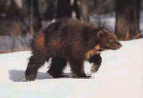
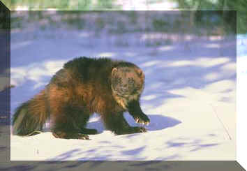

GHIOTTONE (WOLVERINE)

| Climate/Terrain | Foreste Temperate, Piane Artiche e Tundra |
| Frequency | Uncommon |
| Organization | Solitario |
| Activity Cycle | Any |
| Diet | Carnivoro |
| Intelligence | Semi (4) |
| Treasure | Nessuno |
| Alignment | Neutral |
| No. Appearing | 1 |
| Armor Class | 5 |
| Movement | 15 |
| Hit Dice | 3 |
| Thac0 | 17 |
| No. of Attacks | 2 artigli / 1 morso |
| Damage / Attacks | 1d4/1d4/1d4+1 |
| Special Attacks | Vedi Sotto |
| Special Defenses | Nessuno |
| Magic Resistance | Nessuna |
| Size | Medium |
| Morale | Elite (14) |
| XP value | 120 |
Descrizione
Il ghiottone è il più grande rappresentante della famiglia dei Mustelidi. Assomiglia ad un piccolo orso con la coda folta. Gli arti sono lunghi e le larghe zampe sono fornite di robuste unghie. Il corpo riflette tutta la sua potenza, il collo è forte e muscoloso e la testa è larga con il muso allungato. I denti sono robusti e i suoi canini sono molto allungati. Questo Mustelide è lungo circa 70-90 cm ai quali si aggiungono circa 20 cm di coda; il peso varia tra i 10 e i 20 kg ed il maschio possiede dimensioni maggiori della femmina. Il suo pelo è lungo ed arruffato ed è omogeneamente marrone, ad eccezione di una banda più chiara che si prolunga dalla spalla su tutto il fianco e delle macchie grigio chiaro tra gli occhi e le orecchie.
Combat
Possiede delle ghiandole
anali che possono spruzzare, in caso di necessità, delle secrezioni
maleodoranti sino a 3 metri di distanza. Una volta al giorno, ad ogni inizio
round di combattimento vi è 1 possibilità su 6 che venga secretata questa nube
(free action),
quando ciò avviene tutti coloro si trovano in melee con lui devono effettuare
un tiro salvezza contro morte o subire -1 ai loro tiri per colpire per i
successivi 2d4 rounds. Il ghiottone, grazie alle grandi zampe, non sprofonda
sulla neve (non si applica alcuna riduzione di movimento). Non solo, grazie alla
sua andatura a balzi regolari e all’utilizzo di tutte e quattro le zampe si
muove agilmente e velocemente su qualsiasi terreno. Inoltre, la sua resistenza
nella corsa non ha eguali ed anche la renna, l’alce ed il lupo sono meno
resistenti di questo Mustelide (può
mantenere la corsa per il doppio dei round di durata).
Il ghiottone predilige le grosse prede che sono aggredite con balzi dalle rocce
o dai rami bassi. Infine è una creatura molto combattiva, quando
combatte avendo a metà o meno dei suoi punti ferita ottiene un bonus di +2 al
tiro per colpire.
Habitat/Society
Questo Mustelide conduce una vita solitaria ed ha abitudini sia diurne che notturne. Nel periodo invernale, la costante ricerca di cibo, lo costringe a muoversi continuamente. Sebbene viva prevalentemente a terra, è in grado di arrampicarsi agilmente sugli alberi. Le abitudini alimentari variano con le stagioni: nel periodo estivo uova, uccelli, in quello invernale, lepri bianche, carogne e Ungulati, come il capriolo e le renne che, spostandosi con difficoltà sulla neve, sono più vulnerabili alla predazione. Ha l’abitudine di staccare la testa dell’animale catturato e di porla in punti ben visibili come la cima degli alberi o sulle rocce esposte. Talvolta il bottino è troppo grande per un unico pasto, così il ghiottone nasconde una parte che viene dissotterrata nei momenti di carestia.
Ecology
La sua pelliccia se squoiata bene (skinning) ripara dal freddo ed è molto soffice e bella potendo essere venduta fino a 10-15 g.p.
